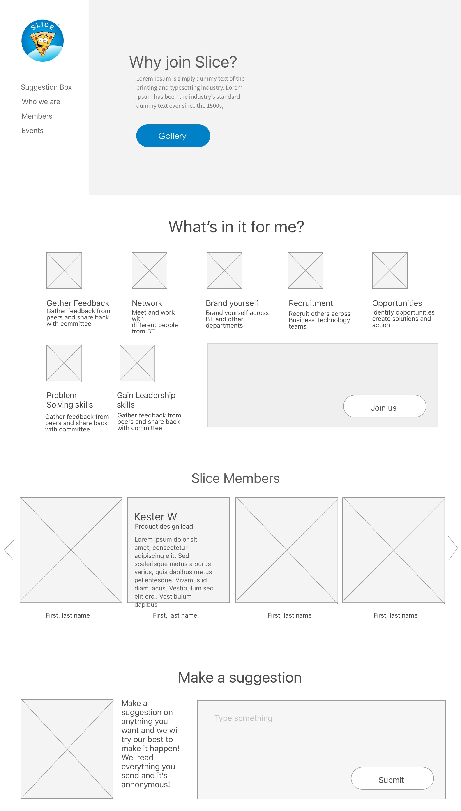
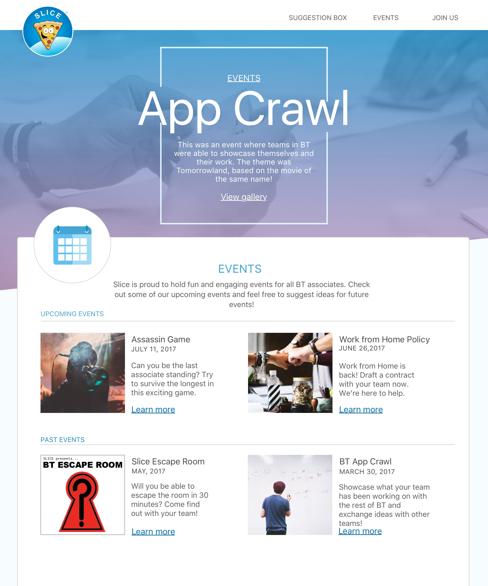

As part of my internship at Loyalty One on the AIR MILES UX Team, I had the opportunity to work with the lead user researcher to perform research studies for the mobile app. This project documents one of the research studies I was heavily involved with.
In June 2017, the new 3.0 version of the AIR MILES Rewards Program mobile app was released on both iOS and Android devices to lukewarm feedback. An experience map was proposed by the UX Research Team to analyse ways to improve the app in future releases. To gather information for this experience map, a unique research method, context chats, were performed.
A context chat is a qualitative UX research method where researchers can engage with users and understand important moments in a user's journey. There were 12 participants in the study and 9 questions were asked in total over the course of 3 weeks.
After these sketches, we began to generate ideas on the Sketch app and created several wireframes for the development team to review. The main purpose of the site was to accept suggestions for employees in the department. What could we do in the website to make that message clear? How should we position elements so that they encourage more engagement?
We continued to iterate on these designs until a final visual design was created. Then, these designs were exported to the developers using Zeplin. Here is what the events page looked like:
All collectors in the study were excited and engaged throughout the duration of the study. Many willingly shared valuable insights and personal motivations they had when using the app and program. All chat transcripts were printed out and analysed to create the experience map.
tribel
Slice